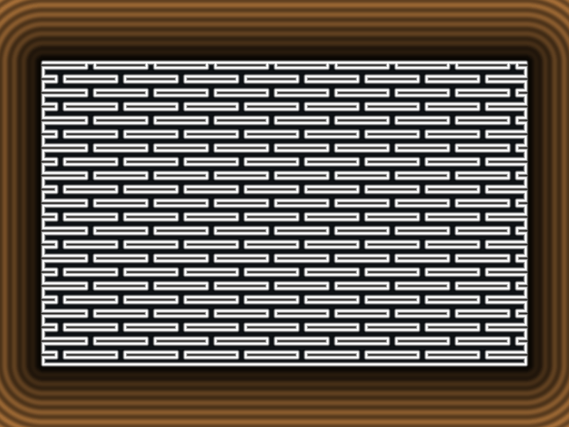
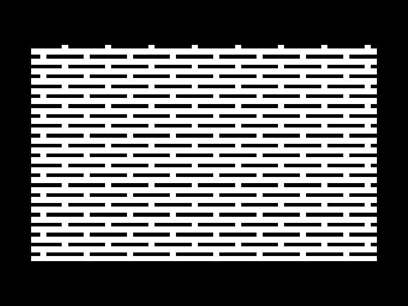

bendy-sheet
Drafted with AI, not yet reviewed
by Reiexperimental/bendy-sheet.scad
Bendy sheet: a laser-cut plywood sheet with a living hinge across all of it, to bend into a half pipe, and the supports that hold it so.
Ported from src/experimental/bendy-sheet.scad.
- The slots are keycap/lasercut’s straight living hinge, one repetition for every slot instead of a loop of 147 squares; HINGE_AT puts its middle slots where the original’s loops put theirs.
- The supports’ slots are the module’s cross laps.
- PART picks the output, as the original’s commented-out calls do: “sheet”, “semicircle”, “leg”.
Compared with the original: within 0.004 mm.


Files
Source
// SPDX-License-Identifier: 0BSD // // Bendy sheet: a laser-cut plywood sheet with a living hinge across all of // it, to bend into a half pipe, and the supports that hold it so. // // Ported from `src/experimental/bendy-sheet.scad`. // - The slots are keycap/lasercut's straight living hinge, one repetition // for every slot instead of a loop of 147 squares; HINGE_AT puts its // middle slots where the original's loops put theirs. // - The supports' slots are the module's cross laps. // - PART picks the output, as the original's commented-out calls do: // "sheet", "semicircle", "leg". // // Compared with the original: within 0.004 mm. import "keycap/lasercut" as lc; // --- Parameters --- const PART = "sheet"; // "sheet", "semicircle", "leg" const STOCK = [270.0, 165.0]; // the area the hinge bends const PADDING = 5.0; // the sheet round it const SLOT = [30.0, 3.0]; const SLOT_GAP = 5.0; // between slots, and between rows const PLY_T = 3.2; // The middle of the hinge's slots: the original's rows run from y = -82 to // 86, and its slots in alternate rows are centred on x = -7.5 and 10. const HINGE_AT = [-7.5, 2.0]; const R = STOCK[1] / PI; // the half pipe's radius // --- Sheet --- fn sheet() { let size = [global::STOCK[0] + 2.0 * global::PADDING, global::STOCK[1] + 2.0 * global::PADDING]; // An area wider than the sheet, so that the sheet's own sides cut the // slots, as the original's do; 22 rows high. let hinge = lc::living_hinge([size[0] + 30.0, 171.0], global::PLY_T, #{ length: global::SLOT[0], width: global::SLOT[1], pitch: global::SLOT[1] + global::SLOT_GAP, bridge: global::SLOT_GAP, }); rect(size).difference(hinge.move(global::HINGE_AT)) } // --- Supports --- // The half pipe's end: a half disc, slotted from below for the legs. fn semicircle() { let r = global::R; let slot = lc::cross_lap(r / 4.0, global::PLY_T).rotate_z(180); circle(r).intersection(-y).difference(union(slot.move([r / 2.0, 0.0]), slot.move([-r / 2.0, 0.0]))) } // A leg along the pipe, slotted from above for three half discs. fn leg() { let r = global::R; let h = r / 2.0; let slot = lc::cross_lap(r / 4.0, global::PLY_T); let slots = []; for x in [0.0, global::STOCK[0] / 3.0, -global::STOCK[0] / 3.0] { slots.push(slot.move([x, h])); } rect([global::STOCK[0], h]).move([0.0, h / 2.0]).difference(union(slots)) } // --- Output --- if PART == "sheet" { draw(sheet()); } else if PART == "semicircle" { draw(semicircle()); } else if PART == "leg" { draw(leg()); }